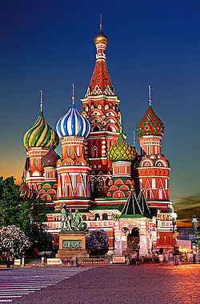
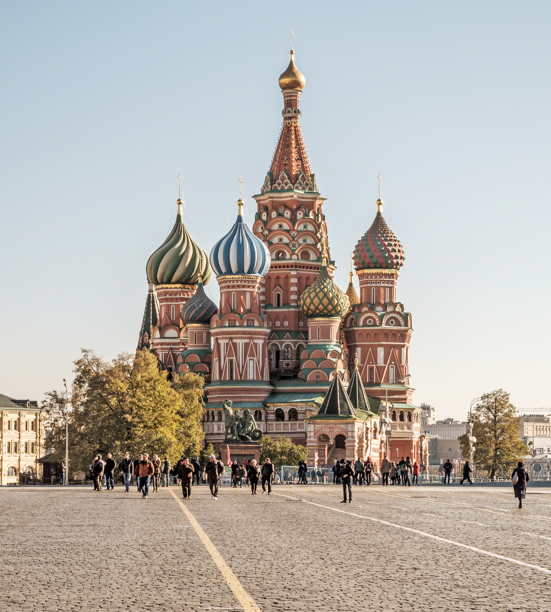
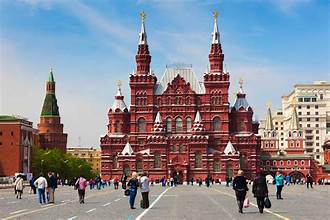
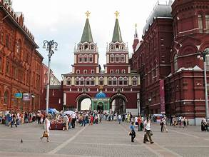
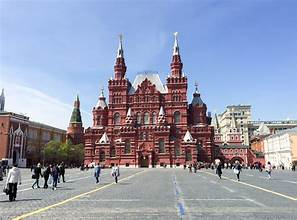
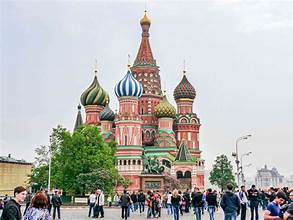

Red Square (Russian: Krasnaya Ploshchad) is the central plaza of Moscow, Russia, situated immediately east of the Kremlin. A UNESCO World Heritage Site since 1990, it has been the symbolic and political heart of Russia for more than five centuries, serving as a marketplace, coronation venue, and parade ground.
Created after the Kremlin walls were completed in the 1490s, Red Square replaced a medieval slum cleared by Ivan III. Its name derives from krasny, meaning “beautiful” in Old Russian, only later “red.” The area’s striking ensemble includes St. Basil’s Cathedral (1555–1561), with its vividly colored onion domes, the brick State Historical Museum to the north, and GUM’s ornate 19th-century arcades to the east. The granite-faced Lenin Mausoleum (1930) anchors the western side beneath the Kremlin wall.
For centuries Red Square was Moscow’s main marketplace and a civic stage. The 16th-century Lobnoye Mesto platform was used for royal proclamations and public ceremonies. In the Soviet era it became synonymous with power displays—especially the May Day and October Revolution military parades that projected Soviet might worldwide
Today Red Square functions as both a national memorial and a lively civic space. Annual events such as the Victory Day Parade (May 9), open-air concerts, and winter ice rinks draw residents and tourists alike. The site’s architectural unity—combining medieval fortification, religious artistry, and Soviet modernism—embodies the layers of Russian history in one enduring urban vista.


